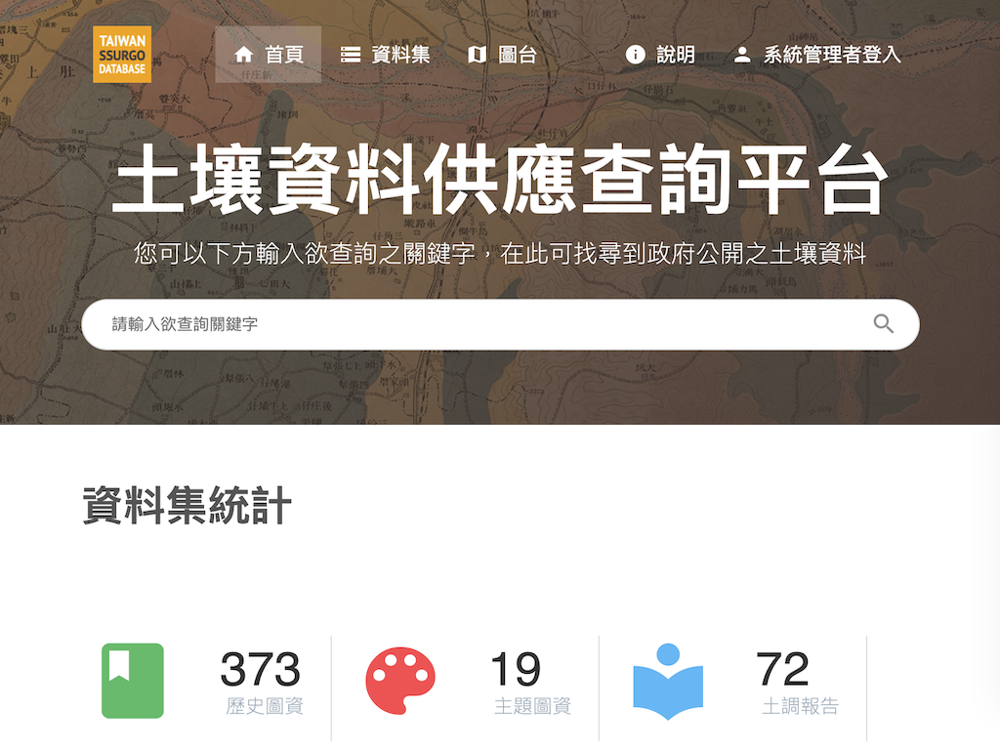
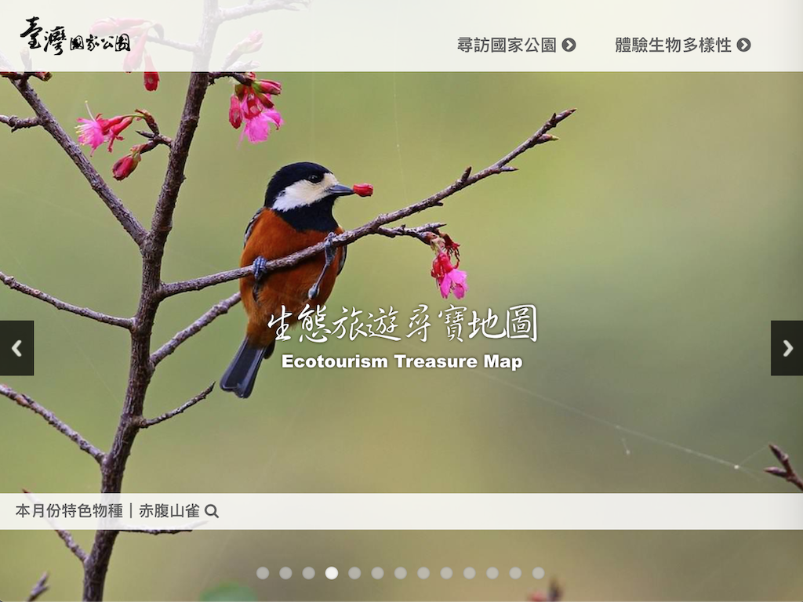
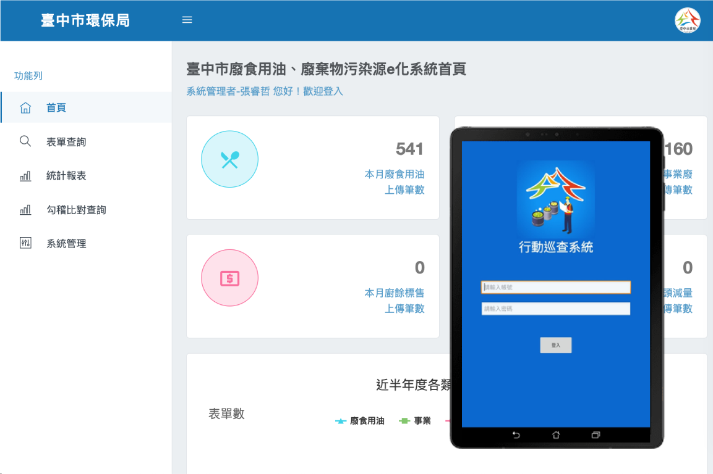

Experience

空氣網 WoTWeb
蒐集全台超過3000台裝置PM2.5數據，結合風場、污染源等環境資訊進行分析，以網頁動態展示三日內任一時間約430萬筆感測資料，掌握污染擴散情形。

土壤資料供應查詢平台Web
蒐集全台最完整之土壤資料庫，包含文件、圖資、報告等內容。提供使用者快速搜尋，並結合圖台動態下載土壤空間資料。

國家公園-生態旅遊尋寶地圖Web
透過地點或物種進行旅遊探索，從季節、生態系、分佈、景點等面向，推薦遊客建議之國家公園行程，並結合既有物種資料庫完整旅遊體驗。

廢食用油及廢棄物e化管理WebAndroid
業務執行人員透過行動裝置進行業務表單填寫與拍照，並可直接於APP內提供業者簽名，完成後可直接上傳並寫入資料庫，e化作業加速行政作業流程。